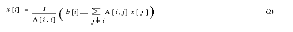

|
hyPACK-2013 Mode-2 : GPU Comp. CUDA enabled NVIDIA GPU Prog. |
|
NVIDIA\92s
Compute Unified Device Architecture (CUDA) is a soft-
ware platform for massively parallel high-performance
computing on the company's powerful GPUs. NVIDIA\92s software CUDA programming model effectively use GPUs which could be
harnessed for tasks other than
graphics, achieving teraflops of computing power.
CUDA Programming model automatically manages the threads and it is significantly differs from single
threaded CPU code and to some extent even the parallel code. Efficient CUDA programs exploit both
thread parallelism within a thread block and coarser block parallelism across thread blocks. Because only
threads within the same block can cooperate via shared memory and thread synchronization, programmers
must partition computation into multiple blocks.
|
List of Programs
|
Example 2.1
|
Simple test Programs using CUBLAS1, CUBLAS2, CBLAS3 library function calls.
|
|
Example 2.2
|
Write a Program for vector vector multiplication using CUBLAS1 library function calls.
|
|
Example 2.3
|
Write a Program for multiplication of a scalar with a vector and add the resultant vector
to a vector using CUBLAS1 library function calls.
|
Example 2.4
|
Write a Program for Matrix Vector multiplication using CUBLAS2 library function calls.
|
|
Example 2.5
|
Write a Program for Matrix Matrix multiplication using CUBLAS3 library function calls.
|
|
Example 2.6
|
Write a CUBLAS CUDA Program for implement solution of matrix system of linear
equations Ax = b by Jacobi method.
|
|
Example 2.7
|
Write a CUBLAS CUDA program to implement the soluiton of Matrix system of Linear Equations
AX=b by Conjugate Gradient method (Iterative Method).
|
|
Example 2.8
|
Write a CUBLAS CUDA program on sparse matrix multiplication of size n x n and vector of size n.(Assignment)
|
|
Example 2.9
|
Write a CUDA program for matrix into matrix multiplication using vendour supplied BLAS libraries (DGEMM)
on host-CPU & Device-GPU to perform computations on host-CPU & device-GPU and extract performance
in Gigaflops
|
|
Example 2.10
|
Write a CUDA program for matrix into matrix multiplication using vendour supplied CUDA BLAS libraries (DGEMM)
and extract the performance in terms of Gflops.
|
|
Example 2.11
|
Write a CUDA program to Demonstrate the Performance of Matrix Matrix Multiplication and extract the performance in terms of Gflops.
|
|
Example 2.12
|
Demonstrate performance of matrix and vector computations on NVIDIA GPUs using MAGAMA BLAS library functions.
(Assignment)
|
|
Example 2.13
|
Demonstrate performance of data-parallel algorithm primitives such
as parallel prefix-sum (\93scan\94), parallel sort and parallel
reduction
using CUDPP Library.
(Assignment)
|
|
Example 2.14
|
Demonstrate performance of sparse matrices computation using NVIDIA CUDA CUSPARSE library.
(Assignment)
|
| |
|
|
Programs for Matrix Computations using AMD-APP Lib.
|
- Objective
Write test programs using CUBLAS1, CUBLAS2, CUBLAS3 library function calls
(CudaBlas Library \96 wrapper functions for efficient and simple usage of CUBLAS
|
|
Example 2.2: |
Write a Program for vector vector multiplication using CUBLAS1 library function calls.
(Download source code :
CUBlasSVectVectMult.cu)
|
- Objective
Write a program to perform vector vector multiplication using CUBLAS1 library function call.
- Description
The input vectors are generated on Host-CPU and transfer the vectors to Device-GPU for
vector multiplication using CUBALS1 library call. The final output value is transferred
back to Host-CPU.
- Input
length of input vectors & generation of elements
- Output
Scalar value
|
|
Example 2.3: |
Write a Program for multiplication of a scalar with a vector and add the resultant vector
to a vector using CUBLAS1 library function calls.
(Download source code :
CUBlasSVectScalarMult.cu
)
|
- Objective
Write a Program for multiplication of a scalar with a vector and add the resultant vector
to a vector using CUBLAS1 library function calls
- Description
Two input vectors ( first, second ) and a scalar value is generated on Host-CPU and multiplication of scalar value with vector is done on Device-GPU.
Addition of resultant vector and second vector is computed on Device-GPU to obtain
the solution vector, which is transferred back to Host-CPU.
- Input
length of input vectors and elements of the vector.
- Output
Solution Vector
|
|
Example 2.4: |
Write a Program for Matrix Vector multiplication using CUBLAS2 library function calls.
(Download source code :
CUBlasSVectMatMult.cu
)
|
- Objective
Write a program to perform matrix vector multiplication using CUBLAS2 library function call.
- Description
The input matrix and input vector is generated on the Host-CPU. In simple algorithm, the input matrix is
partitoned as per Grid of thread blocks. Each thread reads one row of the matrix and performs
computation with column of the vector to obtain resultant vector on Device-GPU. The resultant
solution vector is transferred back to Host-CPU. The CUBLAS2 library call performs
comptuation on the Device-GPU.
- Input
Matrix Size
- Output
execution time in seconds,Gflops achieved
|
|
Example 2.5: |
Write a Program for Matrix Matrix multiplication using CUBLAS3 library function
calls.
(Download source code :
CUBlasSMatMatMult.cu
)
|
- Objective
Write a Program to perform matrix matrix multiplication using CUBLAS3 library function calls.
- Description
Two input matrices are generated on the Host-CPU. In simple algorithm, the input matrix is
partitoned as per Grid of thread blocks. Each thread reads one row of the matrix and performs
computation with one column of the another matrix and compute the correspodning elements of resultant marix on Device-GPU. The resultant
matrix is transferred back to Host-CPU. The CUBLAS3 library call performs
computation on the Device-GPU.
- Input
Matrix Size
- Output
execution time in seconds,Gflops achieved
|
|
Example 2.6: |
Write a CUBLAS CUDA Program for implement solution of matrix system of linear
equations Ax=b by Jacobi method
(Download source code :
CUBlasJacobi.cu
)
|
- Objective
Write a CUBLAS CUDA program, for solving system of linear equations [A]{x} = {b} on CUDA
enabled NVIDIA programming environment using Jacobi method
- Description
The Jacobi iterative method is one of the simplest iterative techniques to solve system of
linear equations.
The ith equation of a system of linear equations [A]{x}={b} is

If all the diagonal elements of A are nonzero (or are made nonzero
by permuting the rows and columns of A), we can rewrite equation (1)

The Jacobi method starts with an initial guess x0 for
the solution vector x. This initial vector x0
is used in the right-hand side of equation (2) to arrive at the next approximation
x1 to the solution vector. The vector x1
is then used in the right hand side of equation (2), and the process continues
until a close enough approximation to the actual solution is found. A typical
iteration step in the Jacobi method is

We now express the iteration step of equation 3 in terms of residual rk.
Equation (3) can be rewritten as

- Implementation
The input matrix and the right hand-side vector, intial soultion vector is generated on Host-CPU and transferred to Device-GPU. In simple algorithm, the input matrix is
partitoned as per Grid of thread blocks. Each thread reads one row of the matrix A and performs
computation with vector and update the solution vector. Convergence of the solution is checked
and the
solution vector is transferred back to Host-CPU.
- Input
Size of Input Matrix and the Vector
- Output
The solution of matrix system of linear equations Ax = b
|
|
Example 2.7: |
Write a CUDA program to implement the solution of Matrix system of Linear Equations AX=b by Conjugate
Gradient method (Iterative Method).
(Download source code :
CudaConjugateGradient.cu)
|
- Objective
CUDA implementaiton for Conjugate Gradient Method to solve the system of
linear equations [A]{x}={b}. Assume that A is symmetric positive definite matrix.
- Description
Description of conjugate gradient method :
The conjugate gradient (CG) method is an example of minimizing
method. A real n x n matrix A is positive definite if xT A x > {0}
for any n x 1 real, nonzero vector x. For a symmetric positive definite matrix A,
the unique vector x that minimizes the quadratic functional
f(x) = (1/2)xTAx-xTb
is the solution to the system Ax = b, here x and b
are n x 1 vectors. It is not particularly relevant
when n is very large, since the conjugating time for that number of iterations
is usually prohibitive and the property does not hold in presence of rounding
errors. The reason is that the gradient of functional f (x) is
Ax - b, which is zero when f (x) is
minimum. The gradient of a function is a n x 1 vector. We explain
some important steps in the algorithm. An iteration of a minimization method
is of the form
xk+1 = xk
+ taukdk
(1)
where tauk is a scalar step size and dkis
the direction vector, dk is a descent direction for f
at x. We now consider the problem of determining tauk,
given xk and dk, so that f(x)
is minimized on the line x = xk + tauk
dk, for tauk. The function f(xk+
tau dk) is quadratic in tau, and its minimization
leads to the condition
tau k = gkTgk
/ dkTAdk ,
(2)
where gk=Axk - b is
the gradient (residue) vector after k iterations. The residual
need not be computed explicitly in each iteration because it can be computed
incrementally by using its value from the previous iteration. In the (k+1)th
iteration, the residual gk+1 can be expressed
as follows:
gk+1 = Axk+1
- b
= A(xk+ tauk
dk) - b
= Axk- b + tauk
Adk
= gk + tauk Adk
(3)
Thus, the only matrix-vector product computed in each iteration is Adk,
which is already required to compute tauk in the
equation (2). If A is a symmetric positive definite matrix and d1,
d2,..., dn are direction vectors
that are conjugate with respect to A (that is, diT
Adj=0 for all 0<n, j<=n, i!=j),
then xk+1 in the Equation (1) converges to the solution
of Ax = bin at most n
iterations, assuming no rounding errors.
In practice, however, the number of iterations that yields an acceptable approximation to the solution is
much smaller than n. It also makes the gradient
at xk+1 orthogonal to search direction, i.e dkT
gk+1 = 0. Now we suppose that the search directions
are determined by an iteration of the form
dk+1 = -gk+1+ betak
dk (4)
where d0 = -g0 and beta0,
beta1 , ...... remain to be determined. We find the new search
direction in the plane spanned by the gradient at the most recent
point and previous search direction. The parameter betak+1is determined by following
equation
Betak+1 = gTk+1Adk/
dTkAdk (5)
And, one can derive orthogonality relations
gTkg l= 0 (l !=
k);
dTkAdl = 0 (l !=k)
The derivation of the above equation (5) and orthogonality relations
is beyond the scope of this document. For details please refer [ ]. Using
equation (3) and orthogonality relations, the equation (5) can be
further reduced to
Betak+1 = gTk+1gk+1/
gTkgk< (6)
The above equations (1) to (6) lead to CG algorithm. The algorithm
terminates when the square of the Euclidean vector norm of gradient (residual)
falls below a predetermined tolerance value. Although all of the
versions of the conjugate gradient method obtained by combining the formulas
for gk, Betak, and tauk
in various ways are mathematically equivalent, their computer implementation
is not. The following version is compared with respect to computational
labor, storage requirements, and accuracy. The following sequence of steps
are widely accepted.
1. tau k =
gkTgk /
dkTAdk
2. xk+1 =
xk + tauk dk
3. gk+1 =
gk + tauk Adk
4. Betak+1 = gTk+1gk+1/
gTkgk
5. dk+1 = -gk+1 +
Betak dk
where k = 0, 1, 2, .......... Initially we choose x0,
calculate g0 = Ax0 - b , and put d0= -g0
The computer implementation of this algorithm is explained as follows :
void CongugateGradient(float
x0 [ ], float b [ ], float d)
{
float g, Delta0, Delta1, beta;
float temp, tau;
int iteration;
iteration = 0;
x = x0;
g = b;
g = A x - g;
Delta0 = gT * g;
if ( Delta0 <= EPSILON)
return;
d = -g;
do {
iteration = iteration + 1;
temp = A * d;
tau = Delta0 / dT * temp;
x = x + tau * d;
g = g + tau * temp;
Delta1 = gT * g;
if ( Delta1 <= EPSILON )
break;
beta = Delta1 / Delta0;
Delta0 = Delta1;
d = -g + beta * d;
}
while(Delta0 > EPSILON && Iteration < MAX_ITERATIONS);
return;
Regarding one-dimensional arrays of size n x 1 are required for
temp, g, x, d. The storage requirement for matrix. A is depends upon the structure
( dense, band, sparse ) of the matrix.The two dimensional n x n array is the
simplest structure to store matrix A. For large sparse matrix A this structure wastes a large amount
of storage space, for such matrix A suitable storage scheme should be
used.
-
The preconditioned conjugate gradient algorithm
Let C be a positive definite matrix factored in the form C = E ET,
and let the quadratic functional
f(x) = (1/2)xTAx - xTb + C ,
We define second quadratic functional g(y) by the transformation y = ETx,
g(x) = g(E-Ty) = (1/2)yTA*y
- yTb * + C*
where A * = E-1AE-T, b* =
E-1b, C* = C.
Here, A* is symmetric and positive definite. The similarity transformation
E-TA*ET = E-TE-1A
= C-1A
reveals that A* and A have same eigen values. If C can be found
such that the condition number of the matrix A* is less than
the condition number of the matrix A, then the rate of convergence of the
preconditioned method is better than that of conjugate gradient method.
We call C the preconditioning matrix, A* the preconditioned
matrix, We assume that the matrix C = EET is positive definite,
since E is nonsingular by assumption. If the coefficient matrix A has l
distinct eigen values, the CG algorithm converges to the solution
of the system Ax = b in at most l iterations
(assuming no rounding errors). Therefore, if A has many distinct eigen
values that vary widely in magnitude, the CG algorithm may require a large
number of iterations to converge to an acceptable approximation to the
solution.
The speed of convergence of the CG algorithm can be increased
by preconditioning A with the congruence transformation A*
= E-1AE-T where E is a nonsingular
matrix. E is chosen such that A* has fewer distinct eigen values
than A. The CG algorithm is then used to solve A* y =b*,
where x =(ET)-1y . The resulting
algorithm is called the preconditioned conjugate gradient (PCG)
algorithm. The step performed in each iteration of the preconditioned
conjugate gradient algorithm are as follows
1. tau k =
gkThk /
dkTAdk
2. xk+1
= xk + tauk dk
3. gk+1 =
gk + tauk Adk
4. hk+1 =
C-1gk+1
5. &nsbp; betak+1 = gTk+1hk+1/
gTkhk
6. dk+1 =
-hk+1 + betak+1dk
where k = 0, 1, 2, .......... Initially we choose x0,
calculate g0 = Ax0 - b, h0=
C-1g0 and d0 = -h0.
The multiplication by C-1 in step (4) is to be interpreted as solving a system of equations
with coefficient matrix C. A source of preconditioning matrices is the class
of stationary iterative methods for solving the system
Ax* = b.
- Parallel implementations of the PCG algorithm
The parallel conjugate gradient algorithm involves the following
type of computations and communications
Partitioning of a matrix : The matrix A is obtained by discretization
of partial differential equations by finite element, or finite difference
method. In such cases, the matrix is either sparse or banded. Consequently,
the partition of the matrix onto p processes play a vital
role for performance. For, simplicity , we assume that A is symmetric
positive definite and is rowwise block-striped partitioned.
Scalar Multiplication of a vector and addition of vectors :
Each of these computations can be performed sequentially regardless
of the preconditioner and the type of coefficient matrix. If all vectors
are distributed identically among the processes, these steps require no
communication in a parallel implementation.
Vector inner products :
In some situations, partial vectors are available on each processes.
MPI Collective library calls are necessary to perform vector inner products
If the parallel computer supports fast reduction operations, such as optimized
MPI, then the communication time for the inner-product calculations can
be made minimum.
Matrix-vector multiplication :
The computation and the communication cost of the matrix-vector
multiplication; depends on the structure of the matrix A. The
parallel implementation of the PCG algorithm for three cases one
in which A is a block-tridiagonal matrix of the type, two in
which it is banded unstructured sparse matrix, and three in which the matrix
is sparse give different performance on parallel computers. Various
parts of the algorithm in each of the three cases dominate in terms of
communication overheads.
Solving the preconditioned system :
The PCG algorithm solves system of linear equations in each
iteration The preconditioner C is chosen so that solving the system modified
system is in expensive compared to solving the original system of
equations Ax = b. Nevertheless, preconditioning increases
the amount of computation in each iteration. For good preconditioners,
however, the increase is compensated by a reduction in the number of iterations
required to achieve acceptable convergence. The computation and the
communication requirements of this step depends on the type
of preconditioner used. preconditioning method such as diagonal preconditioning,
in which the preconditioning matrix C has nonzero elements only
along the principle diagonal does not involve any communication Also,
Incomplete Cholesky (IC) preconditioning, in which C is based on incomplete
Cholesky factorization of A and it may involve different computations and
communications in parallel implementation.
The convergence of CG method iterations performed by checking the error
criteria i.e. eulicidean norm of the residual vector should be less than
prescribed tolerance. This convergence check involves gathering of real
value from all processes, which may be very costly operation.
We consider parallel implementations of the PCG algorithm using
diagonal preconditioner for dense coefficient matrix type. As we
will see, if C is a diagonal preconditioner, then solving the modified
system does not require any interprocessor communication. Hence,
the communication time in a CG iteration with diagonal preconditioning
is the same as that in an iteration of the unpreconditioned algorithm.
Thus the operations that involve any
communication overheads are computation of inner products, matrix-vector
multiplication and, in case of IC preconditioner solving the
system.
- Input
Input Matrix and Right Hand side Vector
- Output
Solution x of linear system of matrix equations Ax = b
|
|
Example 2.8: |
Write a CUBLAS CUDA program on sparse matrix multiplication of size n x n and vector
of size n. (Assignment)
|
- Objective
To write a CUBLAS CUDA program on sparse matrix multiplication of size n x n and vector of size n.
- Efficient storage format for sparse matrix
Dense matrices are stored in the computer memory by using two-dimensional arrays. For example,
a matrix with n rows and m columns, is stored using a n x m array of real numbers. However, using the same two-dimensional
array to store sparse matrices has two very important drawbacks. First, since most of the entries in the sparse matrix
are zero, this storage scheme wastes a lot of memory. Second, computations involving sparse matrices often need to operate only
on the non-zero entries of the matrix. Use of dense storage format makes it harder to locate these non-zero entries. For these
reasons sparse matrices are stored using different data structures.
The Compressed Row Storage format (CRS) is a widely used scheme for storing sparse matrices. In the CRS format, a
sparse matrix A with n rows having k non-zero entries is stored using three arrays: two integer arrays rowptr and colind,
and one array of real entries values. The array rowptr is of size n+1, and the other two arrays are each of size k. The
array colind stores the column indices of the non-zero entries in A, and the array values stores the corresponding non-zero
entries. In particular, the array colind stores the column-indices of the first row followed by the column-indices of the
second row followed by the column-indices of the third row, and so on. The array rowptr is used to determine where the storage of the
different rows starts and ends in the array colind and values. In particular, the column-indices of row i are stored starting at colind [rowptr[i]]
and ending at (but not including) colind [rowptr[i+1] ]. Similarly, the values of the non-zero entries of row i are stored at values [rowptr[i] ]
and ending at (but not including) values [rowptr[i+1] ].
Also note that the number of non-zero entries of row i is simply rowptr[i+1]-rowptr[i].
- Serial sparse matrix vector multiplication
The following function performs a sparse matrix-vector multiplication [y]={A} {b}
where the sparse matrix A is of size n x m, the vector b is of size m and the vector
y is of size n. Note that the number of columns of A (i.e., m ) is not explicitly
specified as part of the input unless it is required.
void SerialSparseMatVec(int n, int *rowptr, int *colind, double *values
double *b, double *y)
{
int i, j, count ;
count = 0;
for(i=0; i<n; i++)
{
y[i] = 0.0;
for (j=rowptr[i]; j<rowptr[i+1]; j++)
y[i] += value [count] * b [colind[j]];
count ++;
}
}
- Description of parallel algorithm
In the parallel
implementation, each thread picks a row from the
matrix and multiplies it with the vector. Thus computation of all threads
is carried out in parallel.
- Implementation
There are two implementations, one using CUDA kernels and the other using CUDPP library.
CUDA implementation
Step 1: The matrix size(no. of rows) and sparsity(percentage of non-zero) are provided by the user in the cmd line.
Step 2: A sparse matrix and a vector of the given size are allocated and initialized. Also the row_ptr and
col_idx vectors are created and assigned their appropriate based on the sparse matrix
Step 3: The above vectors are also created and initialized on the device (GPU).
Step 4: The sparse_matrix and vector are multiplied in the GPU to obtain the result.
CUDPP implementation
Steps 1 and 2 are same as above
Step 3: Only two vectors are allocated on the Device-GPU, the vector to be multiplied and a vector to store the result.
Step 4: A sparse matrix object is created using CUDPPHandle (object pointer) and a CUDPPConfiguration
(a structure containing the specifications of the algorithm, in this case sparse_matrix vector multiplication).
Step 5: The multiplication of sparse matrix and vector are performed calling the CUDPP library procedure
cudppSparseMatrixVectorMultiply() which perfroms the mulitiplication in the GPU.
- CUDA API used:
cudaMalloc(void** array, int size)
// allocates memory on device
cudaFree(void* array )
// frees memory allocated on device
cudaMemcpy((void*)device_array, (void*)host_array, size , cudaMemcpyHostToDevice )
// copies from host to device
cudaMemcpy((void*)host_array, (void*)device_array, size , cudaMemcpyDeviceToHost )
// copies from device to host
- CUDPP API used:
cudppSparseMatrix(&sparseMatrixHandle, config, no_of_non_zero, no_of_rows, (void *) matrix, (unsigned int *) row_ptr, (unsigned int *)col_idx);
//this fucntion creates a sparse matrix object assigned to the sparseMatrixHandle.
cudppSparseMatrixVectorMultiply(sparseMatrixHandle, result, vector);
// performs the multiplication
- Performance:
The gettimeofday() function which is part of sys/time.h is used to measure the time taken for computation.
- Input
The input to the problem is given as arguments in the command line. It should be given in the following format ;
Suppose that the number of rows of the sparse matrix is n (only square matrices are considered) and
the sparsity i.e. the percentage of number of zero's (given in the range 0 to 1) is m, then the program must be run as,
./program_name n m
CPU generates the sparse matrix, the vector to be multiplied using random values and the row_ptr and col_idx vectors based on the sparse matrix.
- Output
The CPU prints the time taken for the computation.
|
|
Example 2.9: |
Write a CUDA program for matrix into matrix multiplication using vendour supplied BLAS libraries (DGEMM)
on host-CPU & Device-GPU to perform computations on host-CPU & device-GPU and extract performance
in Gigaflops
( Download WinRAR ZIP archive:
Cuda_GPU_DGEMM (WinRAR ZIP archive)
)
|
- Objective
Write a CPU-GPU CUDA Program to extract performance of matrix matrix multiplication by performing
computations on host-CPU & Device-GPU
- Description
Two input matrices are generated on the host-CPU In simple algorithm, the input matrix is
partitoned into two different blocks to perform comptuations on host-CPU ↦ device-GPU as per Grid of
thread blocks. The CUBLAS3 library call performs
computation on the Device-GPU and vendor supplied DGEMM libraries such as intel MKL perform computations
on host-CPU.
- Input
Size (Row size, Column size) of the Input matrices and their elements.
- Output
Performance in terms of GFlops.
|
|
Example 2.10: |
Write a CUDA program for matrix into matrix multiplication using
vendour supplied CUDA BLAS libraries (DGEMM) and extract the performance in
terms of Gflops.
( Download WinRAR ZIP archive:
Cuda_CPU_GPU_DGEMM (WinRAR ZIP archive)
)
|
- Objective
Write a CUDA program for matrix into matrix multiplication using
vendour supplied CUDA BLAS libraries (DGEMM) and extract the performance in
terms of Gflops.
- Description
Memory is allocated for two input matrics on host-cpu and device-gpu.
Initialized input matrices on host-cpu.Inputs matrics are copied from host-cpu
to device-gpu.Then CUBLAS3 library function DGEMM is called to
performs matrix-matrix computation on the Device-GPU. The resultant matrix
is copied back from device-gpu to host-cpu.
- Input
Size of the matrix row size, matrix column size
- Output
Time Taken for computation , Gflop/s
|
- Objective
Performance of Matrix Matrix Multiplication
- Description
Provided are 3 functions to show Matrix Matrix Multiplicaiton performance on GPU's. Each function exploits
various hardware features of GPU's to gain performance. One can notice performance will double each time as
one goes from executing from function 1 to 3.
Features that are exploited:
1)Block Size 2)Thread Mapping 3)Shared Memory 4)Global Memory Bandwidth 5)Registers 6)Scheduling 7)Tiling
Lower <function numbers> may not exploit all these features (or to a lesser degree) but as the <function number> increases features will be exploited more agressively.
Function Name: matMulBlockwise<function number> - function that performs matrix matrix multiplication
- Input
Set <Square Matrix Size> <Shared Memory Size> <GPGPU Device Number> <Function Number>
1) <Shared Memory Size> can only take 16, 32, 48 as values
2) <Function Number> can only take 1, 2, 3 as values
- Output
Time taken and gflops for Matrix Matrix Multiplication in individual function runs based on <Function Number>.
|
|
Example 2.12: |
Demonstrate performance of matrix and vector computations on NVIDIA GPUs using MAGAMA BLAS library functions.
Download : http://icl.cs.utk.edu/magma/
|
|
Example 2.13: |
Demonstrate performance of data-parallel algorithm primitives such
as parallel prefix-sum (\93scan\94), parallel sort and parallel
reduction (Primitives such as these are important building blocks for a wide variety of data-parallel
algorithms, including sorting, stream compaction, and building data structures such as trees and
summed-area tables) using CUDPP Library.
Refer : http://gpgpu.org/developer/cudpp
|
|
Example 2.14: |
Demonstrate performance of sparse matrices computation using NVIDIA CUDA CUSPARSE library.
Refer : NVIDIA_CUSPARSE_Library.pdf
|
|
|
|
|